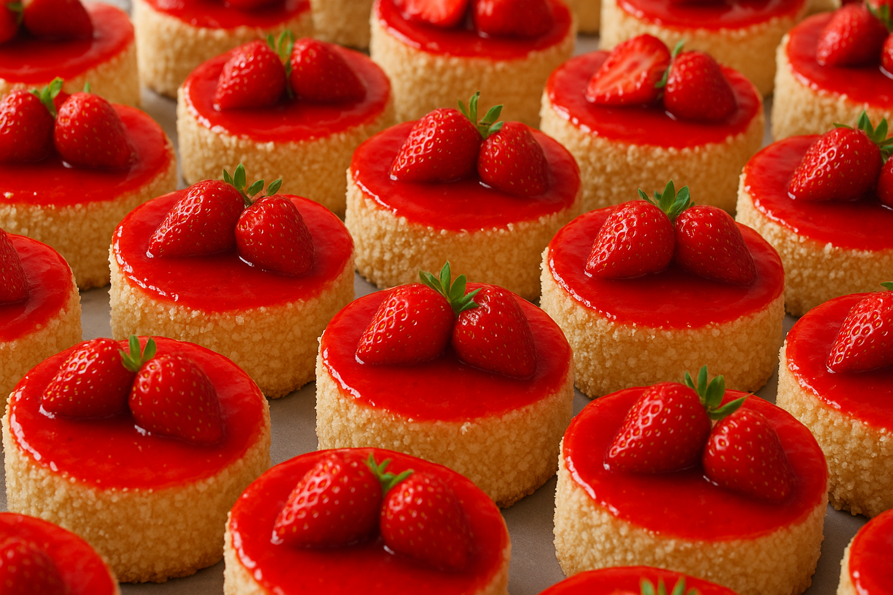
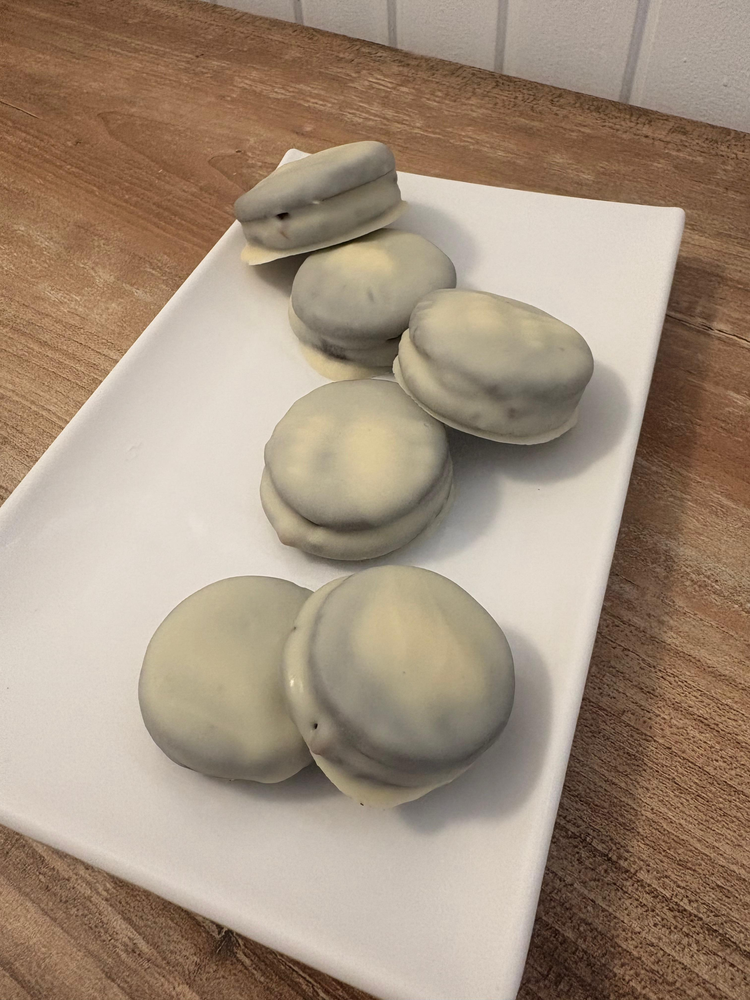
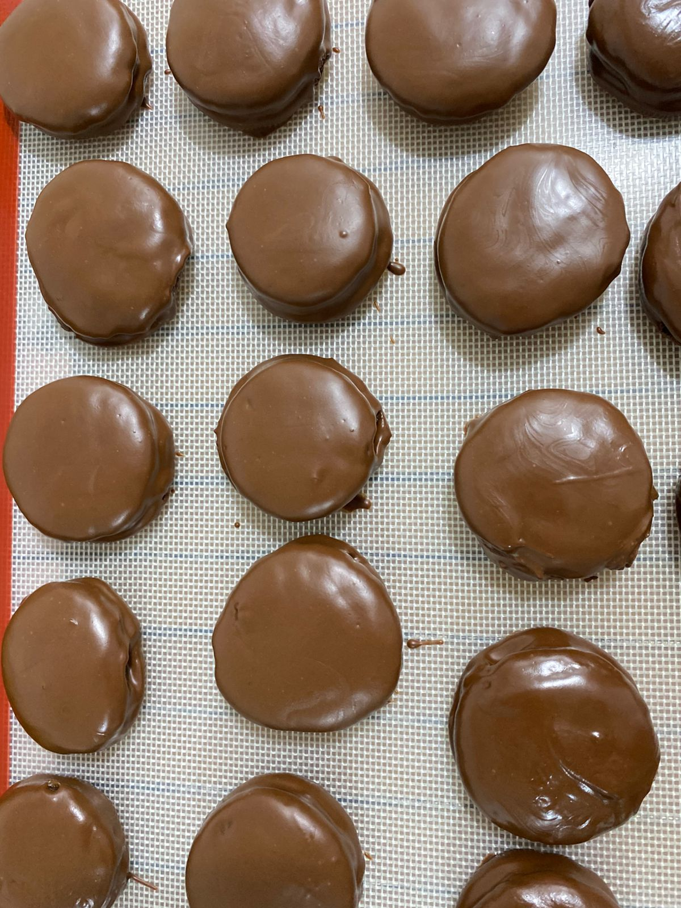

¿Que tenes que saber?
Una torta de frutilla casera sin TACC es una versión sin gluten de la clásica tarta de frutillas, apta para personas con celiaquía o sensibilidad al gluten. Se caracteriza por una base de masa crujiente, un relleno cremoso y una decoración fresca y colorida
En lolalandsintacc, creemos que una dieta sin TACC no significa sacrificar el sabor ni la calidad. Nos dedicamos a crear productos artesanales, deliciosos y 100% seguros para personas con celiaquía e intolerancia al gluten.
Los alfajores caseros sin TACC (sin Trigo, Avena, Cebada y Centeno) se distinguen por tener una textura tierna y un sabor delicado que se derrite en la boca, con un relleno abundante y una decoración sencilla.
